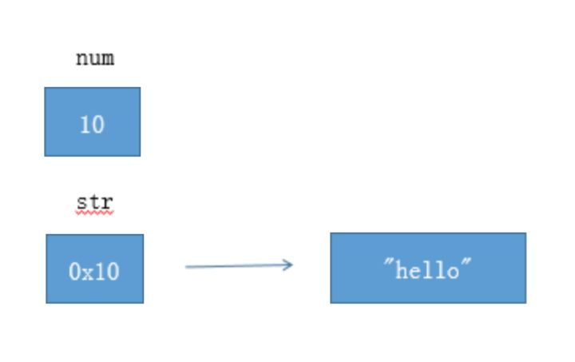
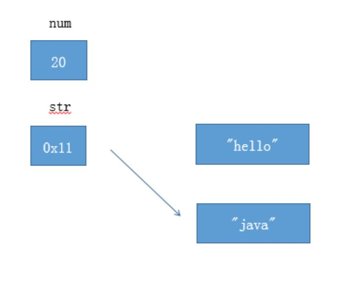

基础篇
0x01 面向对象
什么是面向对象与面向过程？
面向过程，自己造电脑。面向对象，自己组装电脑。
面向对象的三大基本特征和五大基本原则
三大基本特性：封装，继承，多态

- 封装
封装，就是把客观事物封装成抽象的类，并且类可以把自己的数据和方法只让可信的类或者对象操作，对不可信的进行信息隐藏。一个类就是一个封装了数据以及操作这些数据的代码的逻辑实体。在一个对象内部，某些代码或某些数据可以是私有的，不能被外界访问。通过这种方式，对象对内部数据提供了不同级别的保护，以防止程序中无关的部分意外的改变或错误的使用了对象的私有部分。
- 继承
继承，指可以让某个类型的对象获得另一个类型的对象的属性的方法。它支持按级分类的概念。继承是指这样一种能力：它可以使用现有类的所有功能，并在无需重新编写原来的类的情况下对这些功能进行扩展。 通过继承创建的新类称为“子类”或“派生类”，被继承的类称为“基类”、“父类”或“超类”。继承的过程，就是从一般到特殊的过程。要实现继承，可以通过 “继承”（Inheritance）和“组合”（Composition）来实现。继承概念的实现方式有二类：实现继承（extend + 父类名）与接口继承（implement + 接口名）。实现继承是指直接使用 基类的属性和方法而无需额外编码的能力；接口继承是指仅使用属性和方法的名称、但是子类必须提供实现的能力。
- 多态
多态，是指一个类实例的相同方法在不同情形有不同表现形式。多态机制使具有不同内部结构的对象可以共享相同的外部接口。这意味着，虽然针对不同对象的具体操作不同，但通过一个公共的类，它们（那些操作）可以通过相同的方式予以调用。
五大基本原则：SPR, OCP, LSP, DIP, ISP
- 单一职责原则SRP
是指一个类的功能要单一，不能包罗万象。如同一个人一样，分配的工作不能太多，否则一天到晚虽然忙忙碌碌的，但效率却高不起来。
- 开放封闭原则OCP
一个模块在扩展性方面应该是开放的而在更改性方面应该是封闭的。比如：一个网络模块，原来只服务端功能，而现在要加入客户端功能，那么应当在不用修改服务端功能代码的前提下，就能够增加客户端功能的实现代码，这要求在设计之初，就应当将服务端和客户端分开，公共部分抽象出来。
- 里氏替换原则LSP
子类应当可以替换父类并出现在父类能够出现的任何地方。比如：公司搞年度晚会，所有员工可以参加抽奖，那么不管是老员工还是新员工，也不管是总部员工还是外派员工，都应当可以参加抽奖，否则这公司就不和谐了。
依赖倒置原则DIP
具体依赖抽象，上层依赖下层。假设B是较A低的模块，但B需要使用到A的功能，这个时候，B不应当直接使用A中的具体类： 而应当由B定义一抽象接口，并由A来实现这个抽象接口，B只使用这个抽象接口：这样就达到了依赖倒置的目的，B也解除了对A的依赖，反过来是A依赖于B定义的抽象接口。通过上层模块难以避免依赖下层模块，假如B也直接依赖A的实现，那么就可能 造成循环依赖。一个常见的问题就是编译A模块时需要直接包含到B模块的cpp文件，而编译B时同样要直接包含到A的cpp文件。接口分离原则
模块间要通过抽象接口隔离开，而不是通过具体的类强耦合起来
平台无关性
java如何实现平台无关？
Java从四个方面支持了平台无关性
最主要的是Java平台本身。Java平台扮演Java程序和所在的硬件与操作系统之间的缓冲角色。这样Java程序只需要与Java平台打交道，而不用管具体的操作系统。
Java语言保证了基本数据类型的值域和行为都是由语言自己定义的。而C/C++中，基本数据类是由它的占位宽度决定的，占位宽度由所在平台决定的。不同平台编译同一个C++程序会出现不同的行为。通过保证基本数据类型在所有平台的一致性，Java语言为平台无关性提供强有力的支持。
Java class文件。Java程序最终会被编译成二进制class文件。class文件可以在任何平台创建，也可以被任何平台的Java虚拟机装载运行。它的格式有着严格的定义，是平台无关的。
可伸缩性。Sun通过改变API的方式得到三个基础API集合，表现为Java平台不同的伸缩性：J2EE,J2SE,J2ME。
JVM 还支持哪些语言？
Kotlin、Groovy、JRuby、Jython、Scala
值传递
值传递、引用传递
首先，不要纠结于 Pass By Value 和 Pass By Reference 的字面上的意义，否则很容易陷入所谓的“一切传引用其实本质上是传值”这种并不能解决问题无意义论战中。更何况，要想知道Java到底是传值还是传引用，起码你要先知道传值和传引用的准确含义吧？可是如果你已经知道了这两个名字的准确含义，那么你自己就能判断Java到底是传值还是传引用。这就好像用大学的名词来解释高中的题目，对于初学者根本没有任何意义。
作者：Intopass
链接：https://www.zhihu.com/question/31203609/answer/50992895
- 搞清楚 基本类型 和 引用类型的不同之处
1 | int num = 10; |

如图所示，num是基本类型，值就直接保存在变量中。而str是引用类型，变量中保存的只是实际对象的地址。一般称这种变量为”引用”，引用指向实际对象，实际对象中保存着内容。
- 搞清楚赋值运算符（=）的作用
1 | num = 20; |

对于基本类型 num ，赋值运算符会直接改变变量的值，原来的值被覆盖掉。对于引用类型 str，赋值运算符会改变引用中所保存的地址，原来的地址被覆盖掉。但是原来的对象不会被改变（重要）。如上图所示，”hello” 字符串对象没有被改变。（没有被任何引用所指向的对象是垃圾，会被垃圾回收器回收）
- 调用方法时发生了什么？参数传递基本上就是赋值操作。
1 | 作者：Intopass |
为什么说 Java 中只有值传递?
https://www.jianshu.com/p/f1a075af1669
0x02 java基础知识
基本数据类型
8 种基本数据类型：整型、浮点型、布尔型、字符型
整型中 byte、short、int、long 的取值范围
- 基本类型
1、整数：包含int,short,byte,long
2、浮点型：float,double
3、字符：char
4、布尔：boolean
- 分析基本数据类型的特点，最大值和最小值。
1、
基本类型：byte 二进制位数：8
包装类：java.lang.Byte
最小值：Byte.MIN_VALUE=-128（-2的7次方）
最大值：Byte.MAX_VALUE=127（2的7次方-1）
2、
基本类型：int 二进制位数：32
包装类：java.lang.Integer
最小值：Integer.MIN_VALUE= -2147483648 （-2的31次方）
最大值：Integer.MAX_VALUE= 2147483647 （2的31次方-1）
3、
基本类型：short 二进制位数：16
包装类：java.lang.Short
最小值：Short.MIN_VALUE=-32768 （-2的15次方）
最大值：Short.MAX_VALUE=32767 （2的15次方-1）
4、
基本类型：long 二进制位数：64
包装类：java.lang.Long
最小值：Long.MIN_VALUE=-9223372036854775808 （-2的63次方）
最大值：Long.MAX_VALUE=9223372036854775807 （2的63次方-1）
5、
基本类型：float 二进制位数：32
包装类：java.lang.Float
最小值：Float.MIN_VALUE=1.4E-45 （2的-149次方）
最大值：Float.MAX_VALUE=3.4028235E38 （2的128次方-1）
6、
基本类型：double 二进制位数：64
包装类：java.lang.Double
最小值：Double.MIN_VALUE=4.9E-324 （2的-1074次方）
最大值：Double.MAX_VALUE=1.7976931348623157E308 （2的1024次方-1）
作者：晚歌y
链接：https://www.jianshu.com/p/8ec9d3315927
什么是浮点型？什么是单精度和双精度？为什么不能用浮点型表示金额？
浮点数就是带有小数的数值
单精度和双精度实际上是说明浮点数的存储位数
单精度是32位
双精度是64位
另外因为浮点数在计算过程中会丢失精度，所以并不能使用浮点数来表示金额
在Java中用来表示金额可以使用BigDecimal
来源：https://zhiwei-feng.github.io/201810012045.html
自动拆装箱
什么是包装类型、什么是基本类型、什么是自动拆装箱？
基本数据类型：byte，int，short， long， boolean，char，float，double等
包装类型 ： Byte，Integer，Short，Long，Boolean，Character，Float,Double等
http://www.blogjava.net/hgc-ghc/archive/2013/05/02/398675.html